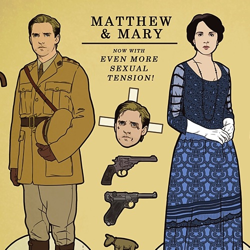

Vulture's Downton Abbey Paper Dolls

I saw this months ago, but didn't actually watch Downton Abbey until recently. If you haven't watched the show, you really should. It's fabulous (you can get both Season 1 and Season 2 really easily). Afterwards, create all your own scenes with these fun paper dolls.